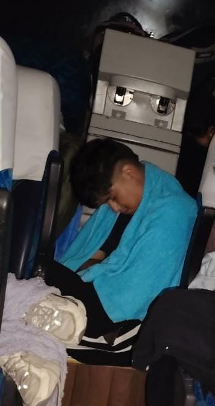

RESIDENCIA ELBER · FUNDADA EN 2008
FELIZ CUMPLEAÑOS, ABUELO ELBER
Hoy celebramos los 18 años de nuestro querido anciano. Una vida llena de experiencias, dolores de espalda y ganas de dormir a las 7 de la noche.
¡ALERTA EN EL BARRIO!
JOVEN DE 18 AÑOS YA SE SIENTE DE 90
Fuentes cercanas confirman que Elber ha decidido abandonar la juventud y dedicarse a sus actividades favoritas: quejarse, dormir y recordar los buenos tiempos.
ELBER EN SUS MEJORES AÑOS
Último registro antes de su jubilación.

EVIDENCIA Nº 001: Elber descansando después el primer día de viaje👴🏻MENSAJE PARA EL JUBILADO
Una pequeña dedicatoria
Querido abuelo Elber:
Feliz cumpleaños, viejito. No puedo creer que ya tengas 18 años. Oficialmente has llegado a esa etapa en la que tienes edad para ser adulto, pero sigues teniendo alma de niño y cuerpo de jubilado.
Espero que la pases increíble, que cumplas todas tus metas y que nunca te falten motivos para reír. Gracias por los momentos, las ocurrencias y las tonterías compartidas.
Disfruta tus últimos años de juventud porque después de esto toca comprar bastón, lentes y buscar ofertas para jubilados.
Nunca cambies, abuelo. Que sigas siendo ese personaje que hace más divertidos los días.
¡Feliz cumpleaños, Elber! 👴🏻
Feliz cumple Elberga,
disculpa si me demore.
REPÚBLICA INDEPENDIENTE DE LOS VIEJITOS
CERTIFICADO OFICIAL
DE JUBILACIÓN ANTICIPADA
Se certifica que:
ELBER
Ha cumplido 18 años y queda oficialmente autorizado para quejarse de la espalda, dormir temprano y contar historias repetidas.
¡FELICES 18, ELBER!
Que la vida te regale muchos años más... aunque tus rodillas no estén de acuerdo. JAJAJA.